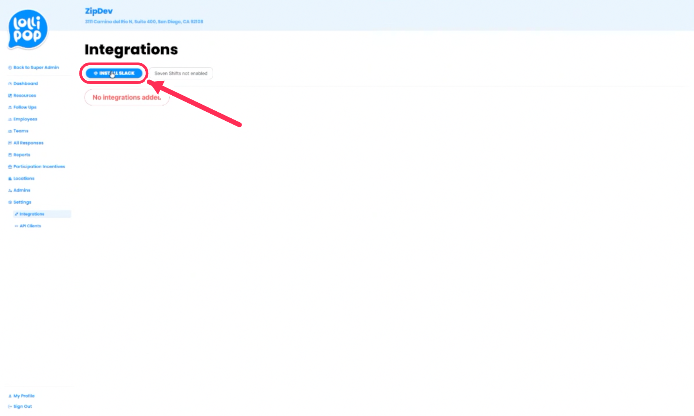
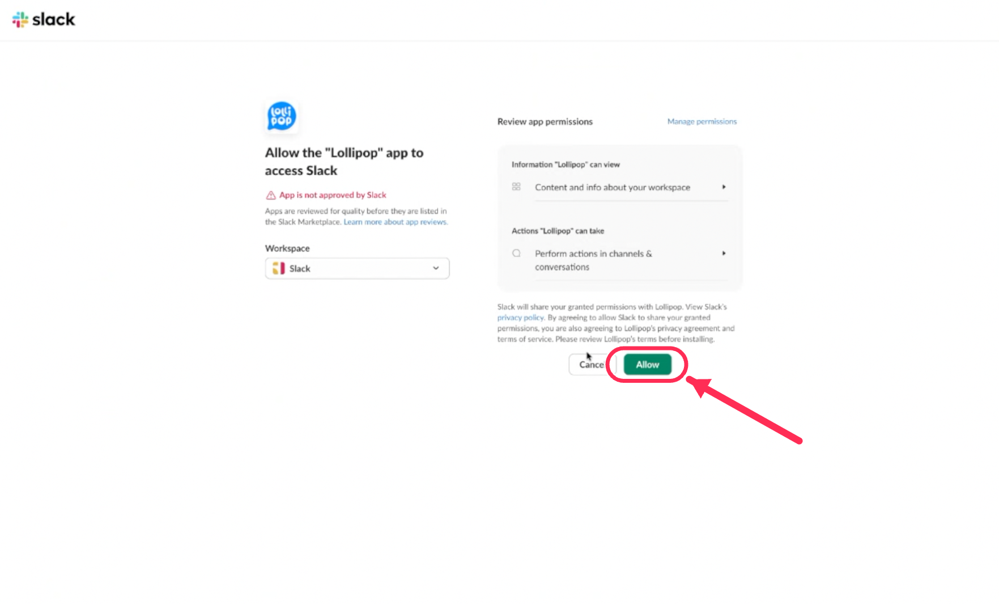

For Customer Admins
Administrator’s
Guide
Your quick guide to launching & running Lollipop
A practical handbook for the admin and champion at your organization — what to expect, the few things we need from you, and how to keep your program running, including adding and removing employees.
- For
- Customer Admin & Champion
- Version
- 1.1 · Condensed
- Updated
- June 10, 2026

 Administrator’s Guide
Administrator’s GuideWhat Lollipop is & what to expect
Lollipop sends each employee one quick check-in — “How are you feeling today?” — by SMS, email, Slack, or WhatsApp, with a 1–5 mood and optional comment. A low score or comment instantly alerts that person's supervisor, who reaches out: check-in → alert → connect.
Our Customer Success team handles all technical setup — account, roster, configuration, go-live. Once we have your spreadsheet and schedule, launch is typically 24–48 hours away, with no app or login for employees. From you: the five inputs below, help introducing it, and supervisors who respond to alerts.
What we need from you — the 5 inputs
An employee spreadsheet. Your people by team — name, mobile and/or email, supervisor. We send a template; you fill it, we upload it.
Your check-in schedule. Day(s), time(s), and time zone(s). Twice-weekly drives the highest participation; weekly is a fine start.
Your administrators. Who should have admin access — a primary champion and a backup.
Your resources & links. Your EAP, crisis lines, and internal well-being resources to show employees and managers.
Monthly report recipients. Who should receive the monthly engagement report.
The champion is the single biggest driver of success — always name a backup. (One customer's participation collapsed to 17% without one.)
Administrator’s GuideWhat we handle for you
Everything below is on us — you never touch setup or configuration.
- Creating your account and uploading and validating your roster from the spreadsheet you send.
- Setting up teams and mapping supervisors to their people for alert routing.
- Configuring channels, alert thresholds, trigger words, follow-ups, and the delivery schedule (including time zones and international SMS).
- Activating the account at go-live, confirming the first round delivers, and sending your first monthly report.
So nothing lands in spam, ask IT to whitelist our sending domains: @lollipopco.co and @trylollipop.com.
Keeping your roster current
As people join and leave, keep your roster current. Two easy options:
- Option A — send us a spreadsheet. Email an updated list of new and departed employees and we'll make the changes. If you'd rather not manage it in the app, this is all you do.
- Option B — do it in the app. Add one person under Employees → Add Employee; for five or more, re-run the upload (it adds rows without deleting anyone). To remove someone, move them to the Inactive List — check-ins stop, history is kept, and they can be reactivated.
Each month we automatically email your admin to send us anyone who has departed and any new employees and their supervisor — so your roster and alert routing stay accurate.
Administrator’s GuideIf your team checks in on Slack
Activating Slack
If your check-ins go through Slack, a Slack workspace admin needs to authorize the Lollipop app once — it only takes a moment, and check-ins won't send on Slack until it's done. We'll remind you a day or two before launch. Two steps:


Slack may note “App is not approved by Slack” — that's expected for a private workspace app like this and is safe to approve. Once you click Allow, you're all set; your team starts receiving check-ins on launch day.
Administrator’s GuideIntroducing Lollipop to your team
How you introduce Lollipop sets the tone. A brief in-person mention at a team meeting helps. Cover four things:
- Why — well-being check-ins so everyone feels seen and heard.
- How — a quick check-in by text, email, Slack, or WhatsApp; a low response alerts their manager.
- Confidential — shared only with their manager and HR; never used for discipline or evaluations.
- Optional — “you're never obligated to share, but if you do, it's seen and it matters.”
Your dashboard at a glance
You get a live read on how your organization is feeling — we'll walk you through it at kickoff:
| Engagement | The share of employees checking in. Low engagement with a healthy mood means a participation nudge — not that something's wrong. |
| Average Mood & Distribution | The 1–5 team average (below 3.5 / 5 warrants a look) and the spread across Terrible → Great. |
| By Team & Trends | Teams side by side, mood over time, and individual responses with follow-ups. |
Set the date filter to the current month, or the numbers reflect a different range.
Administrator’s GuideQuick reference
Finding your way around
Most settings live in the left sidebar. A few items are nested — click a parent to expand it. The most common one people miss: Delivery Schedules lives inside Teams, not on its own.
Lollipop| When check-ins send | Teams›Delivery Schedules›Add Delivery Schedule — set days & time per team, then Save. |
| Add an employee | Employees›Add Employee. For 5+, re-run the upload under Teams›Imports. |
| Remove someone | Employees — open the person and move them to the Inactive List (history is kept). |
| See responses & scores | All Responses, or per team under Teams›Responses. |
| Open alerts to act on | Follow Ups. |
| Monthly & trend reports | Reports. |
| Add an admin or supervisor | Admins. |
| Employee resource links | Resources. |
| Connect Slack · channels · thresholds | Settings›Integrations and Settings›Check Ins. |
If clicking Teams doesn't expand the sub-menu, your login may be a supervisor-only role. Admin rights are needed to see the full Teams menu — your Customer Success contact can adjust this.
Administrator’s GuideConfidentiality & what goes to HR
Trust is the foundation of the program. Responses are shared only with the employee's supervisor and select HR / People Ops contacts; they are never used for discipline, evaluation, promotion, or monitoring; and participation is voluntary — employees may opt out at any time.
Route these to HR — not Lollipop
Medical details, and concerns about pay, benefits, policy, harassment, discrimination, or injury should go directly to your named HR contact.
If someone may harm themselves or others, the supervisor asks directly and immediately notifies HR or the General Manager, following your protocols.
Billing & support
Billing. Your subscription is billed through Stripe, per employee (or per location) depending on your plan. Choose monthly or annual (annual invoiced up front); your first invoice issues at go-live. We'll send your checkout link and apply any agreed promotion.
Support. For questions or technical issues, use the in-platform help or email support@trylollipop.com — we respond within one business day. Your Customer Success contact is your go-to for anything onboarding- or program-related.
That's it. Send the five inputs, introduce it to your team, and respond to alerts with care. We'll handle the rest and check in after launch and each month.